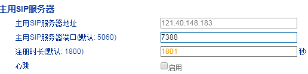
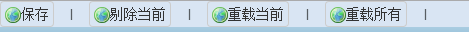

批量配置说明
一、字体颜色说明
灰色：表示未编辑项（保存时不会保存到模板中）
蓝框黑字：表示已编辑项（保存时会保存到模板中）
橙色字体：表示该项已在模板中（保存时会保存到模板中）

二、应用按钮说明
保存：用于保存编辑模板
剔除当前：用于不保存当前编辑项（当前编辑项会变灰色）
注意：编辑过的项都会保存至模板中
重载当前：若当前编辑项模板中有值，将恢复为模板中的值（当前编辑项会变橙色）
重载所有：将恢复模板中所有值的项（模板中所有值的项会变橙色）
